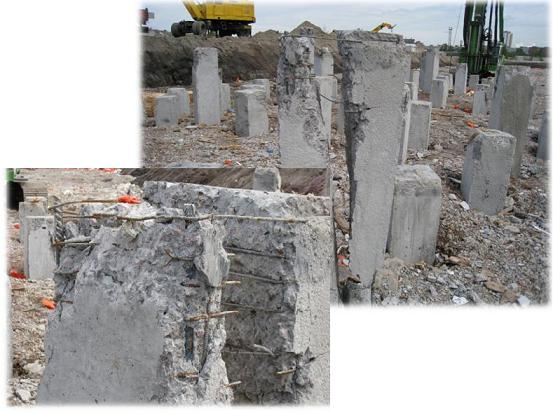
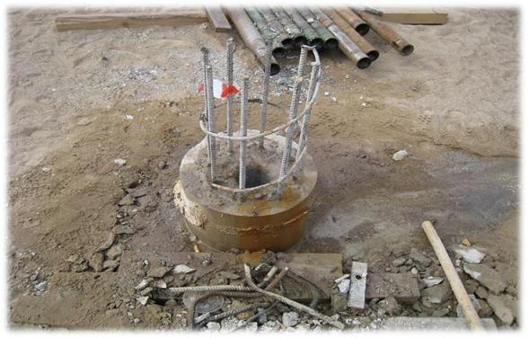
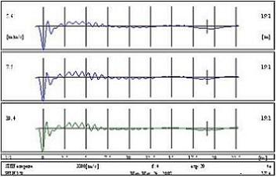
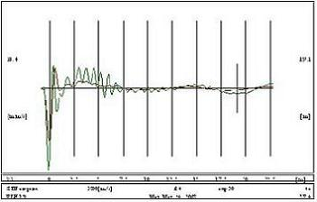

| КОНТРОЛЬ СПЛОШНОСТИ СТВОЛА СВАИ |


Испытания свай проводятся в соответствии с ASTM D 5882-00 «Стандартный метод испытания свай на сплошность неразрушающим методом». Тестирование проводится по методике Sonic Integrity Test – SIT, с использованием измерительного оборудования фирмы Profound, Нидерланды.
Тестирование проводится в виде серии из трех измерений. Каждое измерение проводится с различным начальным импульсом (силой удара). Результаты представлены в виде рефлектограмм. Рефлектограммы представляют собой графики зависимости скорости прохождения волны по длине сваи.
| Рефлектограмма испытанной сваи | Рефлектограмма испытанной сваи, наложенная на среднюю по площадке рефлектограмму | ||
|  |  |
Определить характер дефекта позволяет пакет прикладных программ, в результате работы с которым можно получить приведенный профиль сваи и таблицу с результатами обработки.
Следует отметить, что метод не даёт информации о несущей способности по грунту исследуемых свай.